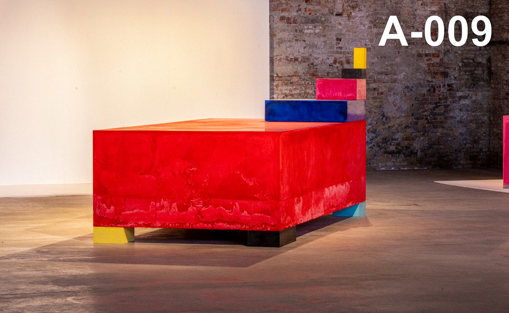
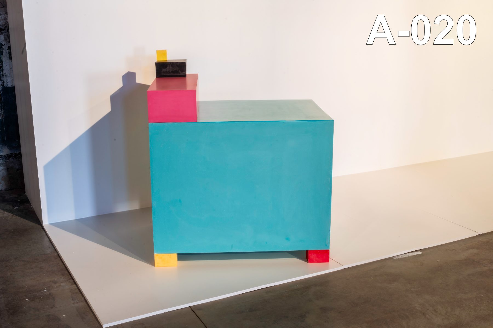
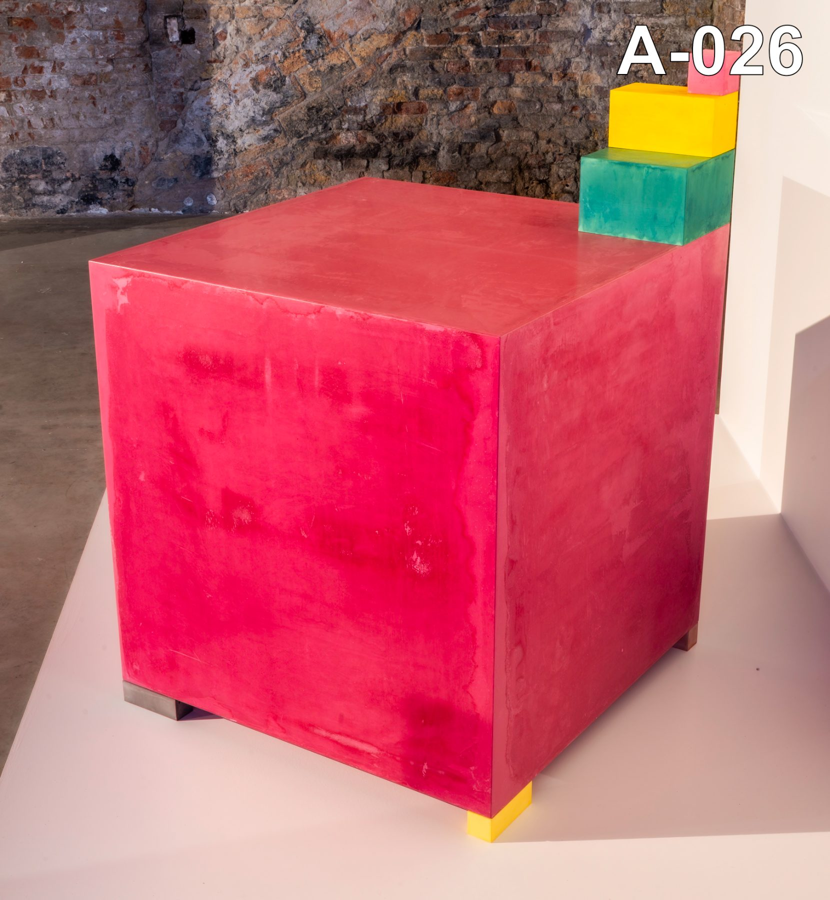

“One of the leading sculptors in the realm of contemporary alchemy.”
The Armenian Mirror-Spectator, 2026
Monumental pigmented-plaster works, 2024–2026, with a proposal for a site-specific installation.

Zadik Zadikian (b. 1948, Yerevan) trained at the Art Academy of Yerevan before escaping the Soviet Union at nineteen, swimming the Araks River under fire. Arriving in San Francisco in 1969, he assisted the sculptor Beniamino Bufano; in New York from 1974 he became a friend and assistant of Richard Serra, producing the large black oil-stick wall drawings — the first of which Serra titled Zadikian.
His 1975 installation 1,000 Bricks Gilded in 22 Carat Gold Leaf at P.S.1 announced the two constants of his practice: the brick as elemental unit, and surface as transformation. Five decades on, the work has returned to the center of the conversation: Path to Nine at the Brooklyn Museum (2024), RETURN at the Cafesjian Center for the Arts, Yerevan (2025), and the Armenian Pavilion at the 61st Venice Biennale (2026).
“My work is about filling a void.”



“One of the leading sculptors in the realm of contemporary alchemy.”
The Armenian Mirror-Spectator, 2026
“Minimal and monumental, singular and interdependent, each unit holds the tension between one and many.”
La Biennale di Venezia, 2026